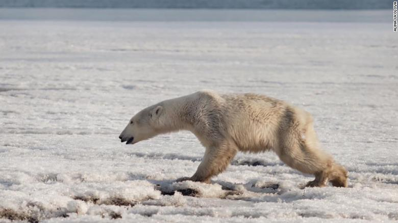

Biodiversity is good for evolution and life on this planet. If humans go extinct, some
species might survive. The more varied life there is, the more chances. Every animal plays a role in a very intricate and
complex web called the ecosystem. Even animals at the top of the food chain: they can prevent other animals from becoming a plague.
Then you don’t need to fear we get too much of them, even if they have no enemies.
How will their extinction affect us?
Although extinctions are a normal part of evolution, human modifications to the planet
have greatly accelerated the rate at which extinctions occur. Large-bodied species, rare species, and habitat specialists are particularly
prone to extinction as a result of rapid human modifications of the planet. Extinctions can disrupt vital ecological processes such as
pollination and seed dispersal, leading to cascading losses, ecosystem collapse, and a higher extinction rate overall. This will directly
affect the quantity of our food source and thus altering human diet and perhaps might even compromise the survival of our race.

How to save wildlife?
There are many ways through which we can save wildlife:-
One of the easiest and most effective ways to help wildlife is to preserve the environment in which the animals live.
Participate in or hold your own local trash clean-up to help protect the habitats of endangered species and other wildlife.
Plant native flowers, trees, and bushes in your backyard. This gives local wild animals food, shelter, and a place to raise families.
Avoid chemical pesticides and fertilizers.
If you see an animals at the park, on a nature trail, or near a water source, let them be and do not remove them from their environment.
These animals survive best in their own habitat. Take a picture instead.
Save energy. Driving less, using energy efficient vehicles and appliances, and simply turning off the lights when you leave a room reduce
energy use. Many power plants rely on coal and other fossil fuels that damage animal habitats when they are extracted and pollute the
environment and contribute to climate change when they are burned.
Final Words...
There are many ways out there to help conserve wildlife. Connect with us and join our struggle to give animal their rights and protect
the ecosystem from being degraded and hence help protect humanity itself. You can subscribe for our email notification to stay
updated about the wildlife. Participate in various cultural and ecological activities organized by the Animal Kingdom Group and contribute
to the conservation of the wildlife and environment.